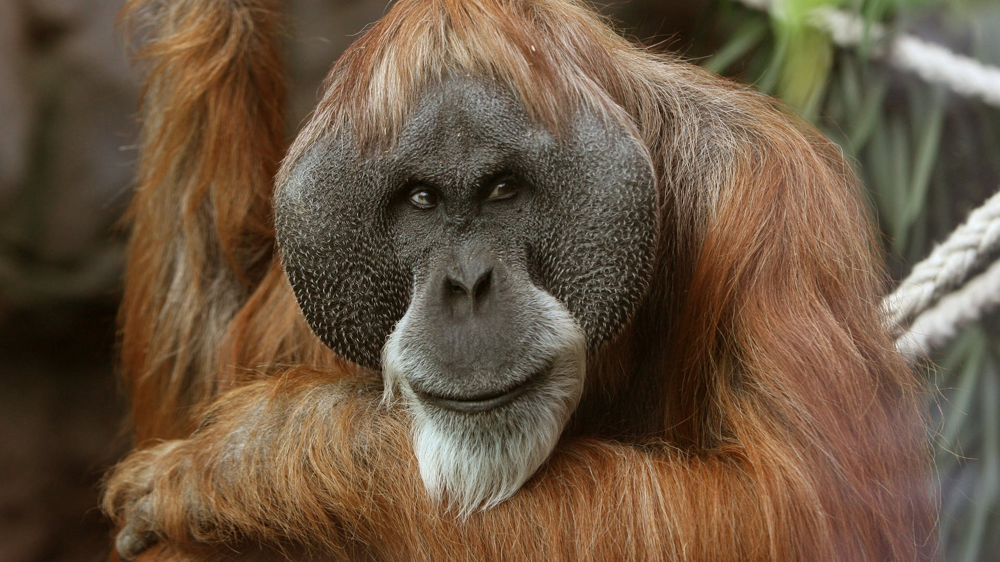

 Orang-Utans sind die größten heute noch lebenden Baumsäugetiere sowie die einzigen überlebenden Großen Menschenaffen Asiens. Es sind überwiegend Einzelgänger, die die meiste Zeit des Tages auf Bäumen verbringen. Sie schlafen sogar in den Bäumen und bauen sich hierfür jeden Abend ein neues Nest. Ebenso wie andere Menschenaffen benutzen Orang-Utans Werkzeuge: Äste nutzen sie zur Verteidigung oder als Speer zum Fische fangen, Blätter nutzen sie wie eine Art Handschuh beim Öffnen stacheliger Früchte. Orang-Utans spielen eine wichtige Rolle im Ökosystem Wald: Sie verjüngen ihn, indem sie Früchte fressen und deren Samen verteilen und beim Hangeln von Ast zu Ast Lichtschneisen ins Kronendach brechen.